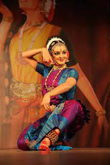

MY HOBBIES
Hobbies are essential for personal enrichment and relaxation. They provide an
escape from daily routines and offer a chance to explore passions.

Sports and dance are my favorite hobbies.
Sports keep me active and competitive, teaching valuable teamwork and discipline.

Dance is my artisticoutlet, allowing self-expression through movement and rhythm.
Both hobbies enrich my life, promoting physical fitness and creativity.